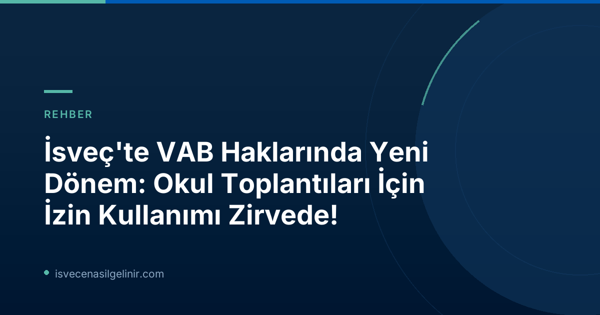

İsveç'te VAB Nedir ve Yeni Düzenlemeler Neden Önemli?
İsveç sosyal refah sisteminin önemli bir parçası olan VAB (Vård av Barn), hastalanan veya özel bakıma ihtiyacı olan çocuğuna bakması gereken ebeveynlere tanınan geçici ebeveyn izni ve parasal destektir. Çalışan ebeveynlerin çocuklarının acil durumlarında veya uzun süreli bakıma ihtiyaçlarında işlerinden izin almalarını sağlayan bu sistem, ailelerin hem çocuklarına bakabilmesine hem de gelir kaybı yaşamamasına olanak tanır. Försäkringskassan (İsveç Sosyal Sigorta Kurumu) tarafından yönetilen VAB sistemi, ebeveynlerin ve çocukların yaşam kalitesini doğrudan etkileyen kritik bir uygulamadır.
Sjukersättning (VAB) Nedir?
VAB, kısaca "çocuğa bakmak için hastalık parası" olarak tanımlanabilir. Normalde çalışan bir ebeveynin, çocuğu hastalandığında veya başka bir sebeple okul/anaokuluna gidemediğinde ve bakıma ihtiyacı olduğunda işinden izin alarak, bu süre zarfında Försäkringskassan'dan belli bir oranda gelir tazminatı almasını ifade eder. Çocuk 8 yaşından büyükse özel durumlar (kronik hastalık, engel vb.) haricinde genellikle VAB alınamaz. Ancak yeni düzenlemelerle birlikte bu tanım ve uygulama alanları genişletilmiştir.
2026'dan İtibaren Geçerli Yeni VAB Kullanım Durumları
İsveç Hükümeti'nin aldığı kararla, 1 Ocak 2026 tarihinden itibaren ebeveynler için VAB kullanılabilecek üç yeni durum daha yürürlüğe girmiştir. Bu değişiklikler, Försäkringskassan istatistiklerine göre ebeveynlerin karşılaştığı modern zorluklara çözüm sunmayı hedeflemektedir.
Okul veya Anaokulu Toplantıları için VAB
Yeni düzenlemelerin en çok dikkat çeken ve kullanılan maddesi, çocuğun hastalığı veya işlevsel bir engeli (funktionsnedsättning) nedeniyle okulunda veya anaokulunda yapılacak bir toplantıya ebeveynin katılması gerektiği durumlarda VAB alabilmesidir. Bu durum, özellikle özel ihtiyaçları olan çocukların eğitim süreçlerinde ebeveyn katılımının önemini vurgulamaktadır.
Sosyal Hizmetler ile Çocuk İzleme ve Değerlendirme Süreçleri
Ebeveynlerin, çocuklarıyla ilgili olarak sosyal hizmetler birimi tarafından yürütülen bir soruşturmaya (utredning) veya ön değerlendirme sürecine (förhandsbedömning) katılması gerektiği hallerde de VAB kullanma hakkı tanınmıştır. Bu madde, ailelerin çocuklarının refahıyla ilgili resmi süreçlerde aktif rol almalarını kolaylaştırmaktadır.
Okul/Anaokulu Personeline Çocuğun Özyönetim İhtiyaçları Eğitimi
Çocuğun diyabet veya egzama gibi kronik bir sağlık durumu olduğunda ve bu durumun yönetimi için anaokulu veya okul personelinin özel eğitim alması gerektiğinde, bu eğitimi bizzat ebeveynin vermesi gereken durumlarda VAB alınabilir. Bu, çocuğun güvenli ve sağlıklı bir eğitim ortamında bulunmasını sağlamayı amaçlayan önemli bir destektir.
Försäkringskassan Raporu: Yeni VAB Hakları Nasıl Kullanıldı?
Försäkringskassan'ın 30 Haziran 2026 tarihinde yayınladığı son rapora göre, 1 Ocak 2026'dan bu yana geçen ilk altı aylık süreçte yeni VAB haklarının kullanımında çarpıcı sonuçlar ortaya çıkmıştır. Kurumun analisti Alma Wennemo Lanninger'in de belirttiği gibi, reformun ilk döneminde özellikle okul toplantıları için izin kullanımı öne çıkmaktadır.
Yeni VAB Hakları İlk 6 Aylık Kullanım Verileri (Ocak-Haziran 2026)
Försäkringskassan'ın yayınladığı son rapora göre, 2026 yılının ilk yarısında yeni VAB haklarından yaklaşık 2.500 farklı kişi faydalandı. Genel VAB kullanımına kıyasla küçük bir paya sahip olsa da, bu yeni haklar özellikle belirli durumlar için ebeveynlere önemli bir destek sağlamıştır. İsveç'teki sosyal haklar ve göçmenlik süreçleri hakkında daha fazla bilgi için sverigemedborgarskapsprov.com adresini ziyaret edebilirsiniz.
| VAB Nedeni | Faydalanan Kişi Sayısı |
|---|---|
| Okul veya anaokulu toplantıları (çocuğun sağlık durumu/engeli nedeniyle) | 1.580 |
| Sosyal hizmetler ile çocuğun değerlendirme/ön değerlendirme süreçleri | 870 |
| Okul/anaokulu personeline çocuğun özyönetim (evde bakımı) ihtiyaçları eğitimi | 120 |
Raporda öne çıkan diğer noktalar:
- Çoğu ebeveyn VAB'ı günün sadece bir kısmı için kullanmıştır.
- Yeni VAB hakları ağırlıklı olarak okul çağındaki çocuklar için kullanılmıştır.
- En çok VAB, 11 yaşındaki çocuklar için alınmıştır.
Uzman Görüşü: Alma Wennemo Lanninger
Försäkringskassan analisti Alma Wennemo Lanninger, konuyla ilgili yaptığı açıklamada, "En yaygın olanı, ebeveynlerin okul öncesi eğitim veya okulla yapılan toplantılar için yeni fırsatı kullanmasıdır. Takip 또한, çoğu kişinin günün sadece bir bölümü için VAB aldığını ve yeni fırsatların başta okul çağındaki çocuklar için kullanıldığını gösteriyor." ifadelerini kullandı. Bu durum, özellikle okul-aile işbirliğinin önemini ve ebeveynlerin çocuklarının eğitim hayatına aktif katılım arzusunu gözler önüne sermektedir.
İsveç'te Ebeveynler İçin VAB Başvuru Süreci ve Dikkat Edilmesi Gerekenler
Yeni VAB haklarından faydalanmak isteyen ebeveynlerin Försäkringskassan'a başvuruda bulunmaları gerekmektedir. Başvuru süreci genellikle dijital platformlar üzerinden veya formlar aracılığıyla gerçekleşir. Başvuru yaparken dikkat edilmesi gereken başlıca noktalar şunlardır:
- VAB almadan önce işvereninizi bilgilendirmek.
- Çocuğun hastalığı veya ilgili durumun tıbbi belgelerle veya okul/sosyal hizmetler yazılarıyla kanıtlanabilmesi.
- Başvurunun VAB alınan günden itibaren en geç 90 gün içinde yapılması.
- Doğru ve eksiksiz bilgi sağlamak.
Yeni düzenlemelerle birlikte, İsveç'teki ebeveynler için çocuklarının eğitim ve sosyal gelişim süreçlerine daha fazla dahil olma fırsatı doğmuştur. Bu hakların doğru ve bilinçli bir şekilde kullanılması, hem ailelerin hem de toplumun refahına katkı sağlayacaktır. Daima en güncel ve detaylı bilgi için Försäkringskassan'ın resmi web sitesini kontrol etmeniz önerilir.
Referanslar:
- Försäkringskassan Resmi Duyurusu (30 Haziran 2026)
- sverigemedborgarskapsprov.com
İsveç'te Vatandaşlık Yolculuğunuz Başlasın!
İsveç'te kalıcı bir gelecek inşa etmek isteyenler için vatandaşlık önemli bir adımdır. İsveç Vatandaşlık Sınavı'na en doğru ve güncel bilgilerle hazırlanmak için kaynaklarımıza göz atın!